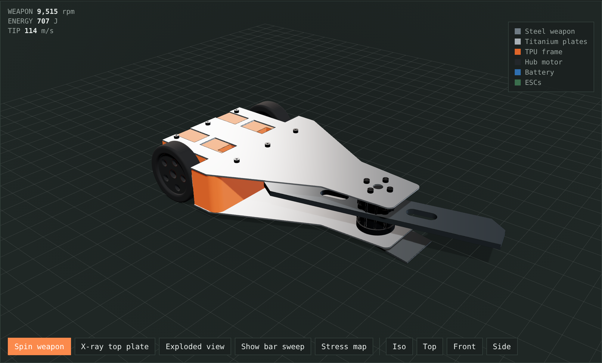
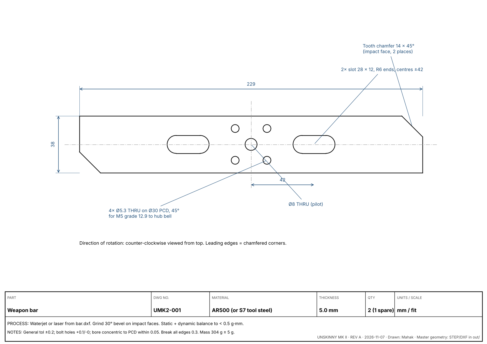
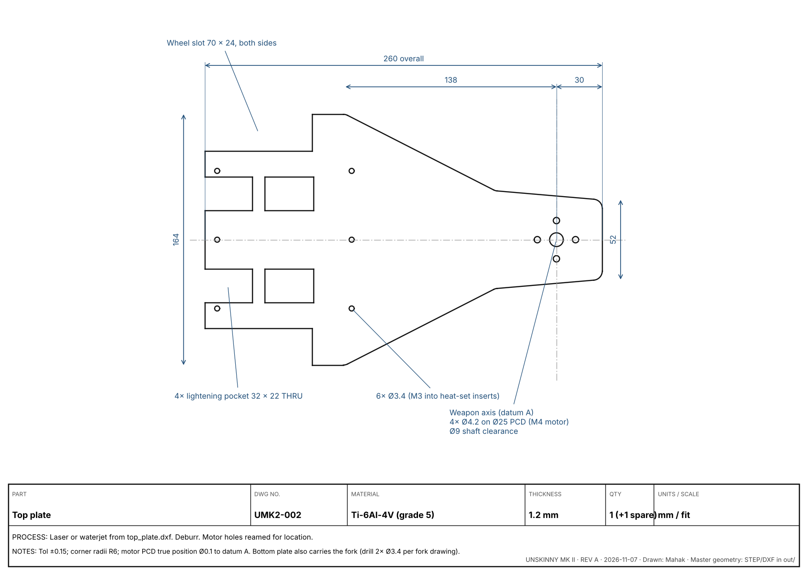
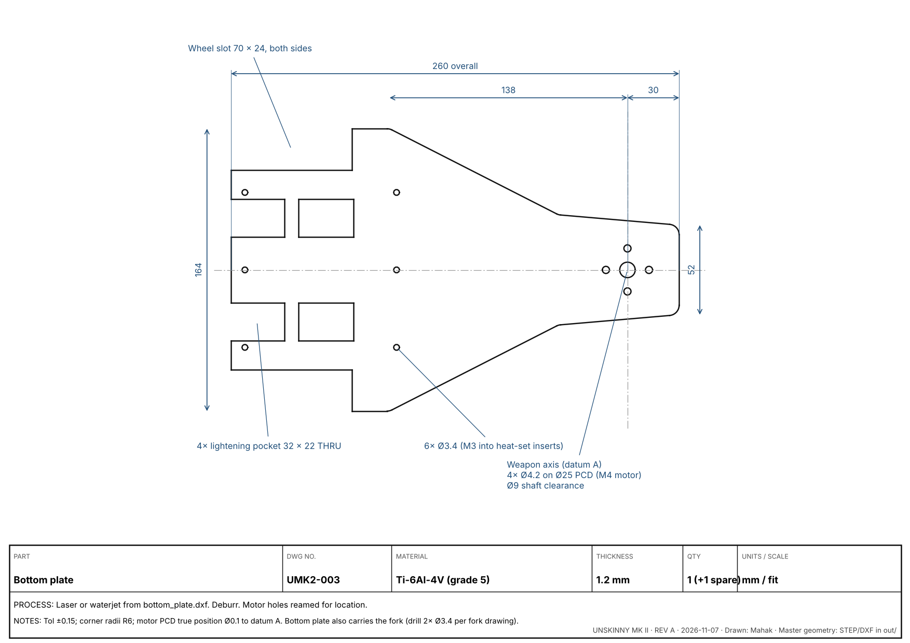
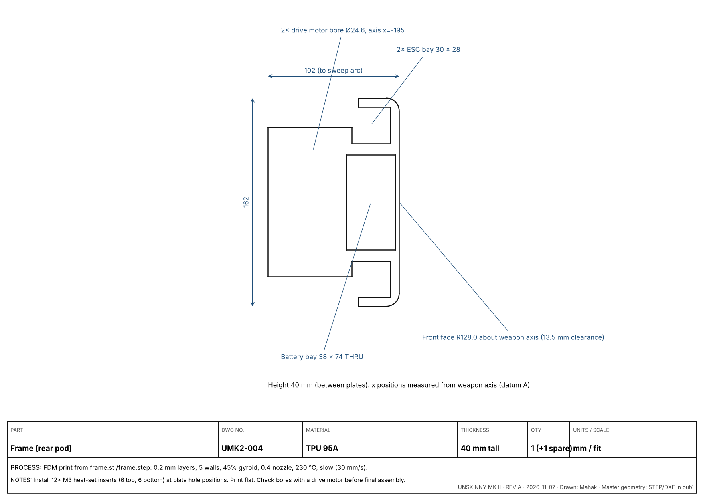
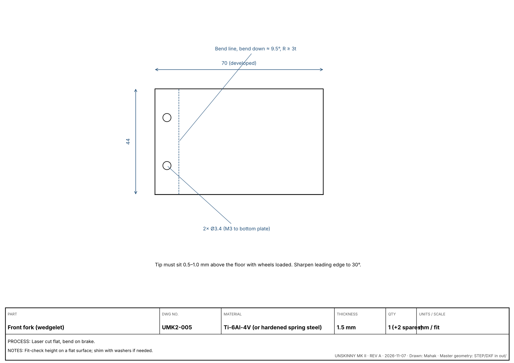
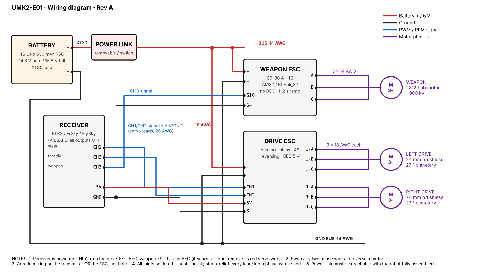
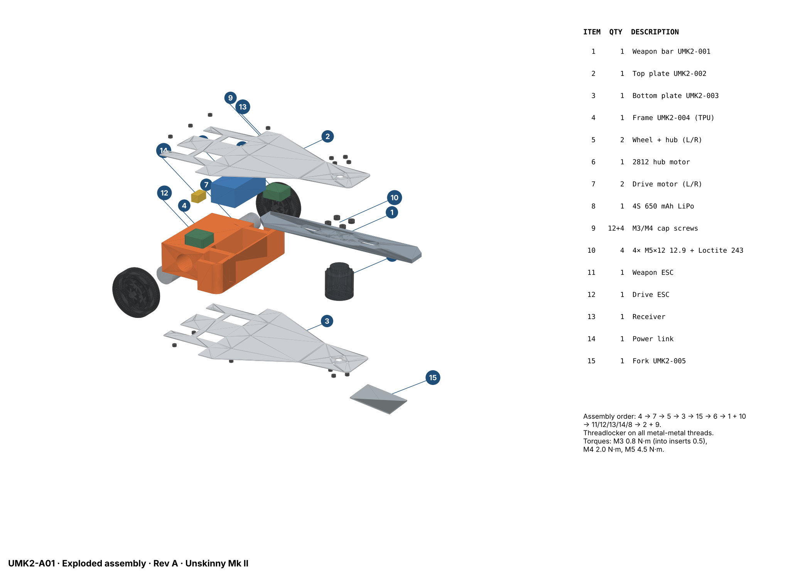

3 lb (1361 g) beetleweight combat robot · horizontal bar spinner · invertible
Designer: Mahak · github.com/mahak867/unskinny

| Mass | 1,328 g (limit 1,361 g) | Weapon | 229 × 38 × 5 mm AR500 bar, 304 g |
|---|---|---|---|
| Weapon speed / energy | ~11,000 rpm / ~940 J (4S) | Spin-up to 90% | 2.0 s |
| Drive | 2× 24 mm brushless planetary 27:1, 2.7 m/s | Power | 4S 650 mAh LiPo |
| Structure | 1.2 mm Ti-6Al-4V plates, TPU 95A frame | Footprint | 260 × 164 × 62 mm (wheels) |
These come from the simulations and design checks, ordered by how much they help. P1 do before building · P2 strongly recommended · P3 later improvement.
| # | Upgrade | Why (evidence) | Cost |
|---|---|---|---|
| P1 | Lower the weapon to 10–15 mm above the floor. Mount the motor offset downward and make the bottom plate a short skid under the bar. | The bar currently spins at the robot's mid-height, about 31 mm off the floor. Wedges, forks and wheels sit lower than that, so the bar skims over them. Hitting low is what horizontal spinners win with. Trade-off: it no longer works upside down, so add a quick self-righting method or accept the risk. | Redesign plates and frame; ~0 g |
| P1 | Use a single-tooth bar (one impact tooth plus a counterweight lobe). | Bite doubles from 8.2 mm to about 16 mm at 3 m/s, about the same as fully engaging the tooth every hit. In the fight simulator, hits under 10 mm bite deliver only 40–70% of the energy. | Same mass; balance carefully |
| P1 | Thicken the frame walls at the ESC bays from about 7 mm to 12 mm, or move the bays toward the middle. | Drawing UMK2-004 shows the ESC bays leave thin walls right behind the wheel slots, the most likely place for a horizontal spinner to hit. | +8 g |
| P2 | Use replaceable hardened teeth: two bolt-on S7 inserts (HRC 54–56) on an AR500 bar. | The teeth take all the impact. Swap them between fights instead of the whole 304 g bar. | +10 g |
| P2 | Use an 850 mAh battery. | The simulation uses 7.4 of the 7.7 Wh available per match, which is too tight. | +25 g (margin is 33 g) |
| P2 | Add a second fork set (longer and lower) for wedge opponents, swappable in under 1 minute. | In the fight simulator, a steel wedge beats Mk II 17 times out of 20 on damage. | Spare part only |
| P2 | Weapon braking or reverse: enable braking in the weapon ESC on a switch. | The gyroscopic tilt is about 11× gravity in fast turns. Slowing the weapon before tight manoeuvres keeps the wheels on the floor. | Setting only |
| P3 | ELRS receiver with telemetry (weapon rpm, battery voltage). | Lets you check the real rpm against the simulation and catch voltage sag. | ~0 g |
| P3 | Shock-mount the electronics in 3 mm EVA foam and strap the battery with Velcro over foam. | A 940 J hit sends shock loads through the TPU frame into the ESCs. | +5 g |
| P3 | Spend the remaining weight on the bar tips (thicker tips or longer bar). | Stored energy grows with mass × radius². 20 g at the tips adds about 8% energy. | uses margin |
params.py after each change and run make. The CAD, simulations and 12 design checks re-run and flag any clash or weight problem.| File | Use |
|---|---|
out/unskinny_mk2_assembly.step | Full assembly, opens in any CAD program |
out/bar.dxf, out/top_plate.dxf, out/bottom_plate.dxf | Laser or waterjet cut files (mm, 1:1) |
out/bar.step, out/top_plate.step, out/bottom_plate.step, out/frame.step | 3D models of each part |
out/frame.stl, out/fork.stl | 3D print / bend reference |
builder/drawings/UMK2-00x_*.svg/png | Dimensioned part drawings (also in §6) |
builder/drawings/UMK2-E01_wiring.svg | Wiring diagram (§7) |
builder/drawings/UMK2-A01_exploded_assembly.png | Exploded assembly with numbered parts (§8) |
unskinny-mk2.html | Interactive 3D model and simulators, works offline |
| Item | Qty | Part | Example / source | Spec to match | g |
|---|---|---|---|---|---|
| 6 | 1 (+1) | Weapon hub motor 2812 | Repeat Robotics 2812 Battle Ready Beetle Hubmotor (palmbeachbots.com) | M4 mount on Ø25 PCD, M5 bell holes on Ø30 PCD, ~900 kV | 175 |
| 7 | 2 (+1) | Drive motor | Repeat Robotics Max V2 24 mm, 27:1 | Ø24 can, 4S capable | 60 ea |
| 11 | 1 (+1) | Weapon ESC | AM32 or BLHeli_32, 60–80 A | 4S, ramp/soft start, brake option | 35 |
| 12 | 1 (+1) | Dual drive ESC | Repeat or DualSky combat dual ESC | brushless, reversing, 4S, 5 V BEC | 15 |
| 13 | 1 | Receiver | ELRS (recommended) / FrSky / FlySky | ≥3 channels, failsafe "no pulses" | 5 |
| 14 | 1 | Power link / switch | Fingertech switch or XT30 removable link | reachable when fully assembled | 10 |
| 8 | 3 | LiPo battery | GNB / CNHL / Tattu 4S 650 (or 850) mAh 75C | ≤ 72 × 36 × 26 mm, XT30 | 85 ea |
| 5 | 2 (+2) | Wheel + hub | Fingertech Viper or cast urethane 62 mm | hub bore to match drive output | 35 ea |
| — | 1 set | Wire & connectors | 14 AWG + 18 AWG silicone, 26 AWG servo leads, XT30 pairs, 3.5 mm bullets, heat-shrink | 40 | |
| — | 1 | Transmitter | Any that binds to the receiver (ELRS: RadioMaster) | failsafe + mixing | |
| — | 1 | Charger + LiPo bag | balance charger, 4S capable |
| DWG | Part | Material | Process | Qty | g |
|---|---|---|---|---|---|
| UMK2-001 | Weapon bar | AR500, 5 mm | Waterjet/laser → grind bevel → balance | 2 | 304.5 |
| UMK2-002 | Top plate | Ti-6Al-4V, 1.2 mm | Laser/waterjet → deburr | 2 | 127.6 |
| UMK2-003 | Bottom plate | Ti-6Al-4V, 1.2 mm | Laser/waterjet → deburr → drill fork holes | 2 | 127.6 |
| UMK2-004 | Frame | TPU 95A | FDM, 5 walls, 45% gyroid, 12× M3 heat-set inserts | 2 | 166.0 |
| UMK2-005 | Fork | Ti-6Al-4V, 1.5 mm | Laser → brake bend ≈ 9.5° | 3 | 17.0 |
Suggested suppliers: SendCutSend or OSH Cut (AR500 and titanium cutting), any local FDM printer or JLCPCB 3D printing for TPU.
| Item | Qty | Fastener | Joins | Torque | Threadlocker |
|---|---|---|---|---|---|
| 10 | 4 (+4) | M5 × 12 socket head cap screw, grade 12.9 | Bar → hub bell | 4.5 N·m | Loctite 243 (blue) |
| 9a | 8 | M4 × 8 button head, grade 12.9 | Plates → hub stator (4 top, 4 bottom) | 2.0 N·m | Loctite 243 |
| 9b | 12 | M3 × 8 button head, A2 or 12.9 | Plates → frame heat-set inserts | 0.5 N·m | none (TPU) |
| 9c | 2 | M3 × 6 button head + nyloc nut | Fork → bottom plate | 0.8 N·m | nyloc |
| — | 12 | M3 heat-set inserts, 5.7 mm long | Into frame top and bottom | — | — |
Check the screw lengths against the actual motor thread depth before ordering. Screws must not reach the motor windings.
The next 5 landscape sheets: UMK2-001 weapon bar, UMK2-002 top plate, UMK2-003 bottom plate, UMK2-004 frame, UMK2-005 fork.






| From | To | Wire | Connector | Approx. length |
|---|---|---|---|---|
| Battery +/− | Power link | 14 AWG silicone | XT30 | 60 mm |
| Power link | Weapon ESC +, Drive ESC + | 14 AWG / 18 AWG | solder splice | 80 / 60 mm |
| GND bus | Weapon ESC −, Drive ESC − | 14 AWG / 18 AWG | solder splice | 80 / 60 mm |
| Weapon ESC A/B/C | Hub motor | 3 × 14 AWG | 3.5 mm bullets | ≤ 70 mm |
| Drive ESC L-A/B/C, R-A/B/C | Drive motors | 6 × 18 AWG | 2 mm bullets | ≤ 50 mm |
| Receiver CH1/CH2/CH3 | Drive ESC / Weapon ESC | 26 AWG servo | JR/Dupont 3-pin | as needed |
| Channel | Function | Goes to | Transmitter setting |
|---|---|---|---|
| CH1 | Steering | Drive ESC CH1 | Arcade mix (on TX or ESC, not both); rate 70% to start |
| CH2 | Throttle | Drive ESC CH2 | Centred = stop; both directions |
| CH3 | Weapon | Weapon ESC SIG | On a switch or slider; low = off; never on a sprung stick |
| CH5 (optional) | Weapon brake / arm | Weapon ESC (if supported) | 2-position switch |

params.py.| Test | Pass condition | Expected (simulated) |
|---|---|---|
| Weight | ≤ 1,361 g | 1,328 g |
| Bar balance | No visible wobble at 25% throttle | CoM < 0.05 mm |
| Failsafe | All motors stop < 1 s | — |
| Spin-up (test box) | 90% speed in < 3 s | 2.0 s |
| Weapon rpm (tachometer or telemetry) | ≥ 9,000 rpm | ~11,000 rpm |
| Drive speed | ≥ 2 m/s across a 2.4 m box | 2.7 m/s |
| 3-minute run | ESCs/motors < 80 °C, pack > 3.6 V/cell at rest | 7.4 of 7.7 Wh used |
| Inverted drive | Drives upside down | wheels 8.8 mm proud |